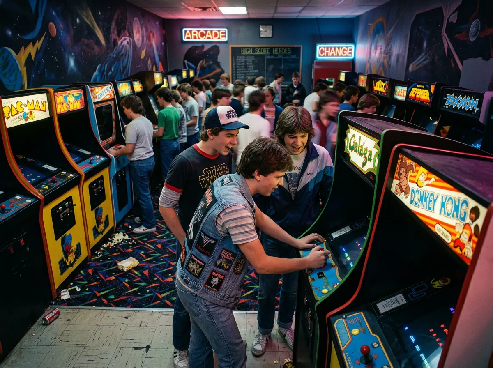
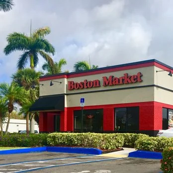
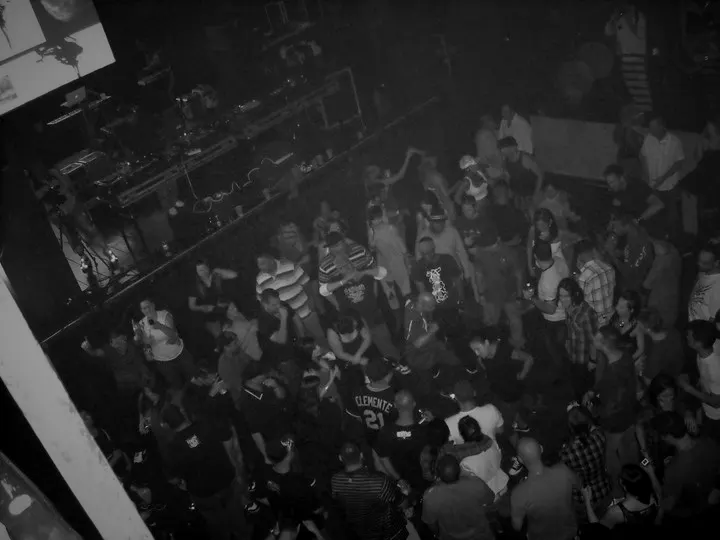
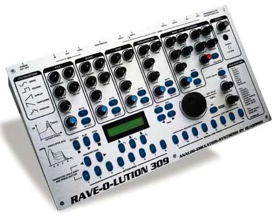
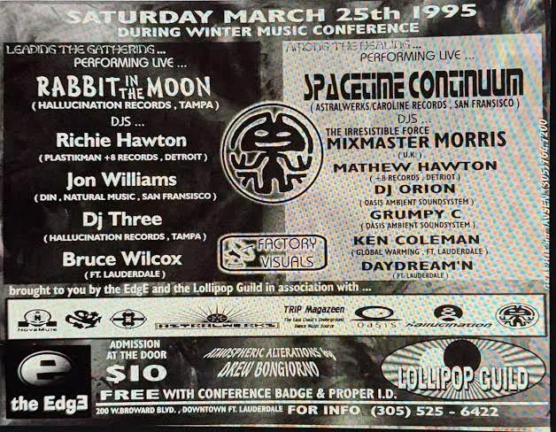
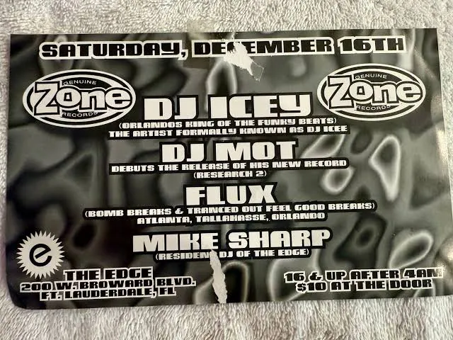
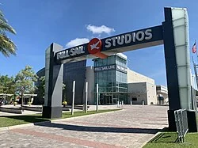
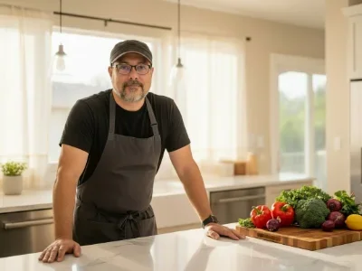

The kitchen and the dancefloor.
My parallel double life, to this day.
I walked into The Edge in Fort Lauderdale in 1993 and it changed my life. I was already washing dishes at Boston Market; by 1994 I was making tracks of my own at night.
Since then I've run kitchens from San Antonio to Los Angeles to St. Augustine, studied audio engineering at Full Sail, and never once worked a line without music. It's a necessity, not a want.
In 2024 I told myself it was now or never. I bought my time and started building.
Born in Puerto Rico, raised around music and computers. Music always calls me back.
Four worlds, colliding since the beginning.
Kitchen, sound, code and play have run side by side my whole life. Tap a lane to follow one.
- 1976Life
Born in Puerto Rico
Computers and games were part of my life from the very beginning.
- 1984Play
Raised on quarters
My dad’s arcades were my first playground: neon signs, cosmic carpet and a change machine that never slept. Galaga taught me patterns. Donkey Kong taught me patience. I was eight, and every game was a world to figure out.

- 1988Life
Puerto Rico to North Miami
We moved to the US and settled in North Miami, Florida. South Florida became home.
- 1991Code
My first real PC
Computers came first. The rave was two years away.
- 1992Kitchen
Dishwasher, Boston Market
Hollywood, Florida. My first kitchen job, and the start of more than three decades on the line.

- 1993Sound
The Edge, Fort Lauderdale
My first rave. The music took me over and I started dancing to the beats. That day changed my life.

- 1994Sound
First synths
A Nord Lead and a Quasimidi Rave-O-Lution 309. I spent every penny I had on that thing.

- 1995Sound
Winter Music Conference at The Edge
Rabbit in the Moon leading the gathering. Nights with DJ Icey and DJ Sharpe. My friends from the club ate at my restaurants; my crews came out to The Edge.


- 1997Code
My first website
It looked good on my computer. On a friend’s it took about 30 minutes to load.
- 2005Life
Georgia, and Benjamin
A new state, and on December 1st my son Benjamin was born. Everything changed, in the best way.
- 2007Sound
Full Sail University
Audio engineering in Orlando.

- 2009Life
Los Angeles
I went west for new kitchens and new flavors. LA gave me both, and something I didn’t see coming: film scores. Music that tells a story without saying a word.
- One nightKitchen
1,000 covers. Four cooks.
At Wolfgang Puck’s. The night I’ll never forget.
- 2011Kitchen
Back to South Florida
Geronimo’s Bar and Grill: line cook, assistant manager, bartender.
- 2016Kitchen
Executive chef, St. Augustine
Three successful restaurants. There is not one kitchen I will work in without music. It’s a necessity, not a want.

- 2024Code
Now or never
I always wanted to build apps and never had the time. So I saved up and bought my time.
- 2024Code
KeyMacro
My kitchen brain in an app. It takes a meal plan and breaks it into stations, hot, cold and prep, in order of what takes longest. Seven months from concept to first sale.
- 2025Code
SlidePress
Built out of necessity: social posts used to take me three apps and hours. Now it’s ten minutes, everywhere at once. In production in two months.
- 2026Sound
Back in the studio
Threshold of Sound, Sonic Illusion, Dawn on the Loading Dock. I’ve stopped many times, but music always calls me back.
- 2026Code
This hub
Every lane in one place.
- Dec 2026Play
POE Source
Gaming is another parallel highway in my life. POE Source is built to launch with Path of Exile 2 1.0 on December 11.